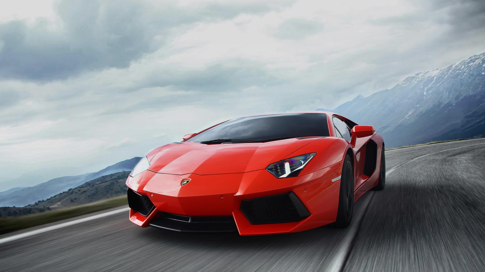

To us at Lamborghini, revolutionary thinking is a staple. Whether it is an aeronautics-inspired design, the technology of the V12 engine, or the extensive use of carbon fiber, going beyond the commonly-accepted limits is part of our philosophy. The new Aventador models have been designed to exceed the concept of performance itself, establishing a new benchmark for super sports cars, and turning the cars of the future into a present-day reality. A supercar family that has already become a legend in its own right.

OVERVIEW
An icon cannot be reinvented, it can only be challenged. And only Aventador could surpass itself. Following Miura, Islero, Countach, and Urraco, Lamborghini’s most iconic model now reaps the inheritance of the historic S models and evolves into the new Aventador S Coupé. Exclusive Lamborghini design and the new V12 engine with a whopping 740 HP now join the most sophisticated technology of the range, featuring the new LDVA (Lamborghini Dinamica Veicolo Attiva/Lamborghini Active Vehicle Dynamics), which offers an unparalleled driving experience to all those who honour their egos by challenging themselves every day.
EMOTION
What the new S model inherits from the Aventador family is its extraordinary beating heart: the iconic V12 engine. It is the sign of recognition of a thoroughbred power, with its excellent acceleration performance at any engine speed, lightning-fast responsiveness, a breathtaking roar, and now a full 40 HP more to unleash on the asphalt. But Aventador S Coupé will not settle for less and wants everything: the performance features of a super sports car are joined by the extreme agility and handling of the 4 Wheel Steering system for unprecedented driving dynamics, along with the possibility to have the most personal driving experience ever thanks to the brand new EGO customised driving mode.
EXTERIOR DESIGN
Working on the design of an icon like Aventador means not altering its character but exalting it even more. Aventador S Coupé continues to display the unmistakable Lamborghini DNA, while strengthening its mix of dynamism, refinement, and aggressiveness by means of even sharper lines inspired by nature and by aeronautics. While the hexagonal design of the new tailpipes means that the rear end is as powerful as the engine of a space shuttle, the front end features forms that recall the fins of a shark, transmitting the same force and elegance in dominating the road. But the design of a Lamborghini is never an end in itself. Each surface of the new Aventador S Coupé has been studied to gain power and improve performance. Compared to the first Aventador, in fact, the new design elements provide an increase of 130% in front downforce, while the new side air vents reduce turbulence, improving cooling and increasing efficiency.
INTERIOR
The interiors of the new Aventador S Coupé fully reflect the car’s mission, which is, to be different from all others: a super sports car with cutting-edge technology but also incredibly luxurious. The interior finishes are crafted using materials of the highest quality and present an infinite variety of possibilities, like the new S-trim configuration, created to celebrate the car’s name. The options also include the possibility to choose an innovative material such as Carbon Skin® and to have certain parts of the carbon body left exposed. The elegance of the interior is matched with the extremely advanced technology, such as the instrument panel with interactive TFT LCD display with completely redesigned graphics, and the possibility to enhance the interiors with a LED lighting system created ad hoc.
DRIVING DYNAMICS
In addition to its beating heart, Aventador S Coupé is also endowed with an incredibly sophisticated brain: the innovative Lamborghini Active Vehicle Dynamics (LDVA) control unit, a system of active technologies that can manage each of the dynamic axles of the vehicle. The lateral vehicle dynamics is controlled by a steering system that involves all four wheels using Lamborghini Dynamic Steering (LDS) and Lamborghini Rear-wheel Steering (LRS). The vertical vehicle dynamics is handled by the Lamborghini Magneto-rheological suspension (LMS) and the active rear aerodynamics. And the longitudinal dynamics relies on the four-wheel drive system (4WD). The LDVA system combines all the information coming from the car’s sensors and establishes in real time the best setting for each driving condition. The result is performance that is absolutely perfect, safe, and compelling.
4 WHEEL STEERING
For the first time in its segment, the new Aventador S Coupé offers a unique combination of the active front steering system (Lamborghini Dynamic Steering) and the rear system (Lamborghini Rear-wheel Steering), offering topnotch dynamic performance. The LDS system adapts to the speed and the driving mode selected by moving from direct steering to a more indirect mode, while the LRS system handles the rear steering axle by means of two electromechanical actuators. With this system, at low speeds the rear axle steers in the opposite direction with respect to the front axle, leading to a virtual reduction of the wheelbase, which means greater nimbleness and unrivalled cornering performance. At high speed, instead, the two axles rotate in parallel, which generates a virtual increase of the wheelbase, thus guaranteeing full control of the car and excellent stability.
4 ACTIVE SUSPENSION
The new Aventador S Coupé features magneto-rheological front and rear shock absorbers with pushrod system, which constantly modify the behaviour of the suspensions according to the road conditions and the driving mode selected. In addition to compensating roll and undesired body movements, the system has been specially designed to work with the Rear-wheel Steering System, thus ensuring a perfect response in any type of condition.
4 WHEEL DRIVE
The four-wheel drive system of the new Aventador S Coupé has been optimised to work specifically with all the new active systems, in particular Rear-wheel Steering, the stabilising effect of which makes it possible to have a high percentage of distributed torque on the rear wheels. This gives a feeling that’s sportier and more fun, but without compromising safety or ease of driving. The four-wheel drive system guarantees excellent performance in situations involving poor grip, and like all the other active systems of the car, it is calibrated according to the driving mode selected by the driver. The torque distribution between the front and the rear axles dynamically varies according to the driving mode selected and driving condition. Moreover, Aventador S Coupé can count on a new generation of Pirelli P Zero tyres. Developed specifically for the Aventador S Coupé, they have been designed to further enhance the car’s innovative active systems to ensure excellent driving dynamics.